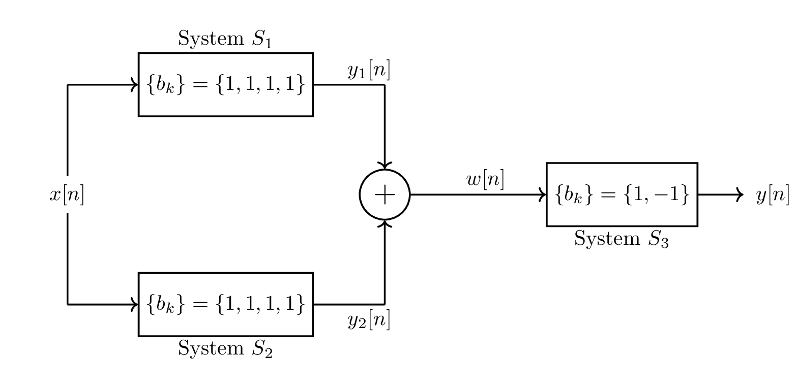

\documentclass{standalone}
\usepackage{pst-sigsys} %Not used in the creation of this document
\usepackage{tikz}
\usetikzlibrary{arrows,automata}
\usetikzlibrary{automata,positioning,arrows.meta}
\usetikzlibrary{circuits}
\begin{document}
\tikzset{%
block/.style = {draw, thick, rectangle, minimum height = 3em,
minimum width = 3em},
mult/.style = {draw, circle, node distance = 2cm}, % Multipler
sum/.style = {draw, circle, node distance = 2cm}, % Adder
input/.style = {coordinate}, % Input
output/.style = {coordinate} % Output
label/.style = {draw=none} % Text label
}
\newcommand{\suma}{\Large$+$}
\newcommand{\mult}{\Large$\times$}
\newcommand{\inte}{$\displaystyle \int$}
\newcommand{\derv}{\Huge$\frac{d}{dt}$}
\begin{tikzpicture}[auto, node distance=2cm,thick]
\matrix[column sep = .75cm, row sep = .75cm]
{ & & & & & & &\\
\node [coordinate](a1){}; & \node [block](A2){$\{b_k\}=\{1,1,1,1\}$}; &
\node [coordinate](a3){}; & & & & &\\
\node (x){$x[n]$}; & & \node [sum](add1){\suma}; & &\node [coordinate](b5){}; & \node [block](B6){$\{b_k\}=\{1,-1\}$}; & \node [coordinate](b7){};& \node [coordinate](b8){}; \\
\node [coordinate](c1){}; & \node [block](C2){$\{b_k\}=\{1,1,1,1\}$}; & \node [coordinate](c3){}; & & & & &\\
& & & & & & &\\
};
\draw [-] (x) to (a1);
\draw [->] (a1) to (A2);
\draw [-] (A2) to (a3);
\draw [->] (a3) to (add1);
\draw [-] (x) to (c1);
\draw [->] (c1) to (C2);
\draw [-] (C2) to (c3);
\draw [->] (c3) to (add1);
\draw [->] (add1) to (B6);
\draw [->] (B6) to (b7);
%draw S text labels
\node[label,shift={(0,0.75)}] at (A2) {System $S_1$};
\node[label,shift={(0,-0.75)}] at (C2) {System $S_2$};
\node[label,shift={(0,-0.75)}] at (B6) {System $S_3$};
\node[label,shift={(-0.25,0.25)}] at (a3) {$y_1[n]$};
\node[label,shift={(-0.25,-0.25)}] at (c3) {$y_2[n]$};
\node[label,shift={(-0.25,0.25)}] at (b5) {$w[n]$};
\node[label,shift={(-0.25,0)}] at (b8) {$y[n]$};
\end{tikzpicture}
\end{document}